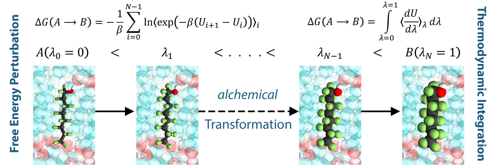
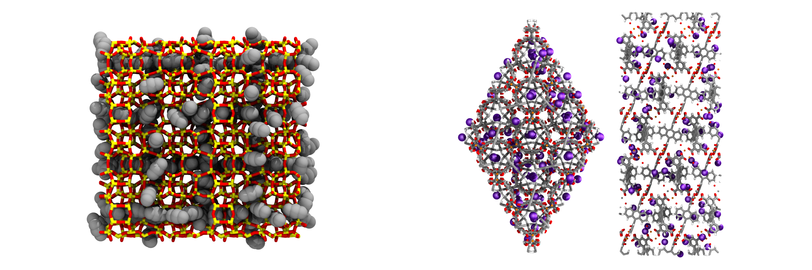
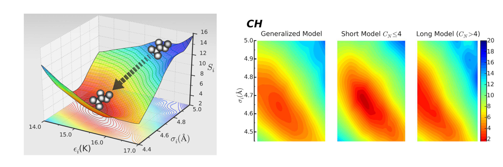
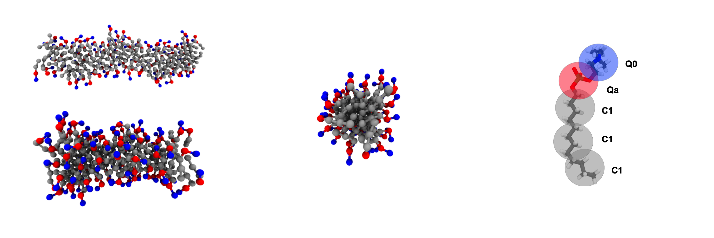

1 / 6

2 / 6

3 / 6

4 / 6

5 / 6

6 / 6

GPU Optimized Monte Carlo (GOMC)
GOMC is open-source software for simulating molecular systems using the Metropolis Monte Carlo algorithm. The software has been written in object oriented C++, and uses OpenMP and NVIDIA CUDA to allow for execution on multi-core CPU and GPU architectures. GOMC employs widely-used simulation file types (PDB, PSF, CHARMM-style parameter files) . GOMC can be used to study vapor–liquid equilibria, adsorption in porous materials, surfactant self-assembly, and condensed phase structure for complex molecules. To learn more about GOMC, please refer to our documentation and recently published GOMC paper.
Ensembles
GOMC supports simulations in a variety of ensembles, which include:
Force fields
GOMC supports a variety of all-atom, united atom, and coarse grained force fields such as:
Molecule
GOMC supports a variety of molecular topologies:
Monte Carlo moves
GOMC supports a variety of Monte Carlo moves, such as: